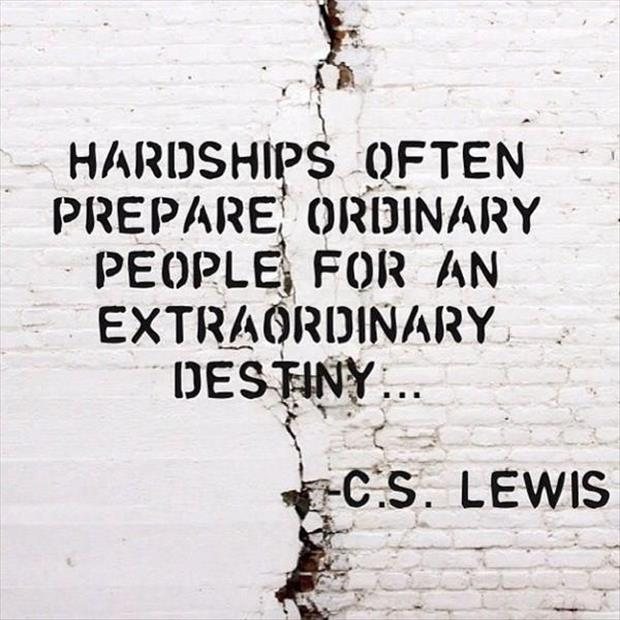
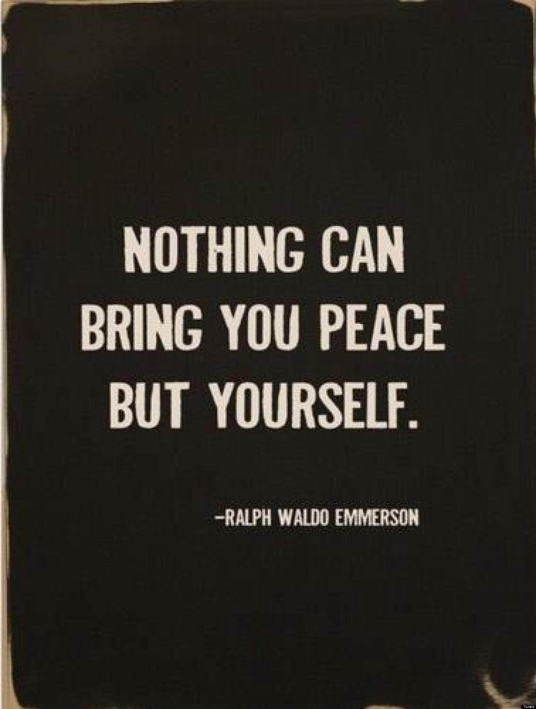

| Chain | Pros | Cons |
|---|---|---|
| Starbucks | Christmas cards, longer queues (more time wasted) | More expensive, more tourists. |
| Nero | Loyalty cards, christmas drinks | Smaller cups, too milky |



Your parents, grandparents and friends have images of you doing this...
...in this room...
...in 'the dreaming spires'...
But, in fact, you're actually doing this:
So, first things first, lets be honest, you're definitely not getting any work done at least not for a couple of hours. So lets make this procrastination mildly useful...
| Chain | Pros | Cons |
|---|---|---|
| Starbucks | Christmas cards, longer queues (more time wasted) | More expensive, more tourists. |
| Nero | Loyalty cards, christmas drinks | Smaller cups, too milky |